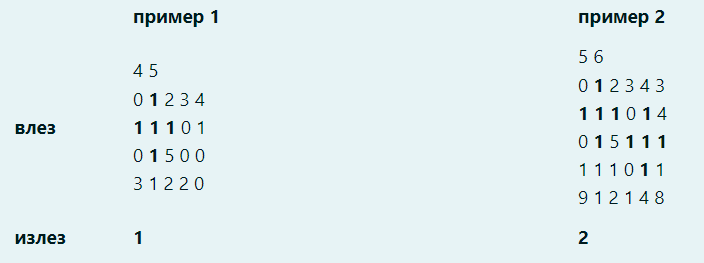

Да се напише програма која за матрица внесена од тастатура ќе ја пресмета разликата на збирот на елементите на непарните колони и збирот на елементите на парните редици. Матрицата не мора да биде квадратна.
#include<iostream>
using namespace std;
int main() {
int a[100][100], n, m, sumKol = 0, sumRed = 0;
cin >> n >> m;
for (int i = 0; i < n; i++){
for (int j = 0; j < m; j++){
cin >> a[i][j];
}
}
for (int i = 0; i < n; i++){
for (int j = 0; j < m; j++) {
if ((j + 1) % 2){
sumKol += a[i][j];
}
if (!((i + 1) % 2)){
sumRed += a[i][j];
}
}
}
cout << sumKol - sumRed;
return 0;
}Да се напише програма која за матрица внесена од тастатура ќе ги замени елементите од главната дијагонала со разликата од максималниот и минималниот елемент во матрицата. Резултантната матрица да се испечати на екран.
#include<iostream>
using namespace std;
int main() {
int a[100][100], n, max, min;
cin >> n;
for (int i = 0; i < n; i++) {
for (int j = 0; j < n; j++) {
cin >> a[i][j];
if (i == 0 && j == 0) {
min = max = a[i][j];
} else if (a[i][j] > max) {
max = a[i][j];
} else if (a[i][j] < min) {
min = a[i][j];
}
}
}
for (int i = 0; i < n; i++) {
a[i][i] = max - min;
}
for (int i = 0; i < n; i++) {
for (int j = 0; j < n; j++) {
cout << a[i][j] << "\t";
}
cout << endl;
}
return 0;
}Да се напише програма која за квадратна матрица внесена од тастатура ќе испечати на екран дали таа е симетрична во однос на главната дијагонала.
#include<iostream>
using namespace std;
int main() {
int a[100][100], n, simetrichna = 1;
cout << "Vnesete dimenzija na kvadratna matrica:" << endl;
cin >> n;
cout << "Vnesete gi elementite:" << endl;
for (int i = 0; i < n; i++){
for (int j = 0; j < n; j++){
cin >> a[i][j];
}
}
for (int i = 0; i < n - 1; i++) {
for (int j = i + 1; j < n; j++) {
if (a[i][j] != a[j][i]) {
simetrichna = 0;
break;
}
}
if (!simetrichna){
break;
}
}
if (simetrichna){
cout << "Matricata e SIMETRICHNA vo odnos na glavnata dijagonala" << endl;
}
else{
cout << "Matricata ne e SIMETRICHNA vo odnos na glavnata dijagonala" << endl;
}
return 0;
}Потребно е да се пронајдат и избројат сите појавувања на обликот „Х“ составен само од елементите со вредност 1. Обликот „Х“ е составен од 5 елементи со вредност 1 кои се соодветно распределни во матрицата (елемент со вредност 1 кој има елементи со вредност 1 како негови дијагонални соседи).
Од стандарден влез се вчитуваат димензиите на една матрица и елементите на истата. Потребно е да ги изброите сите појавувања на обликот „Х“ во рамките на матрицата. Да се претпостави дека не смее да има поклопување на елементите од два облика „Х“ (пример 2). Појавувањата на обликот „Х“ се бараат одлево-надесно и одгоре-надоле.
